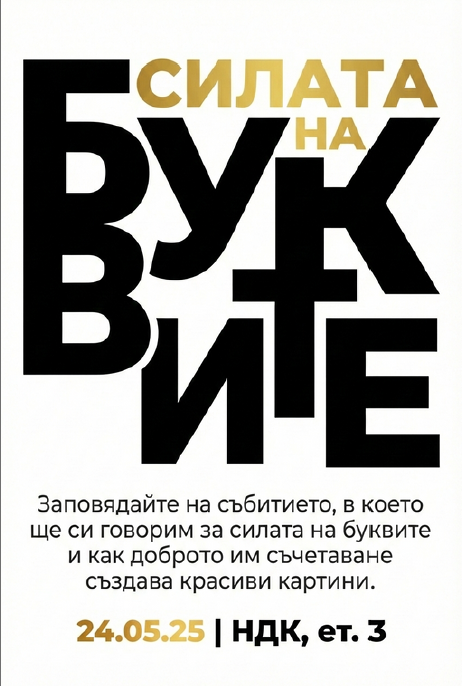
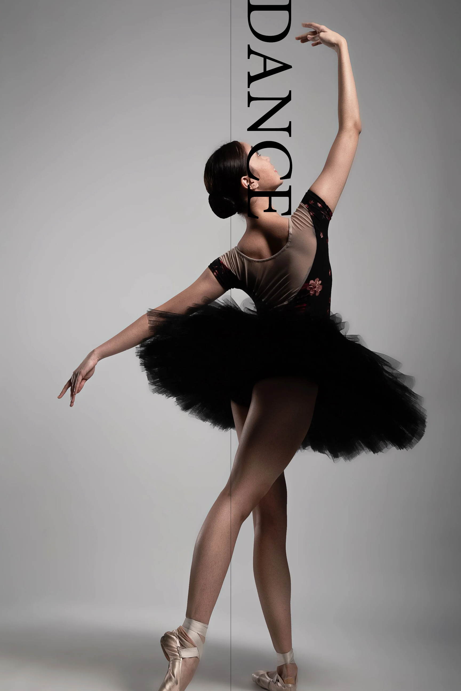

Предпечатната подготовка е ключов процес, който свързва дигиталния графичен дизайн с реалното физическо производство на печатни материали. Като ученик в 11 клас, аз изучавам тънкостите на превръщането на дигиталния проект в перфектно отпечатано издание – без разминавания в цветовете или дефекти в резолюцията.
В тази специалност се фокусирам върху важни технически параметри като преобразуването на цветови модели от RGB в CMYK, определянето на разделителна способност (DPI), настройките за наддаване за рязане (bleed) и управлението на шрифтове. Работата с професионален софтуер ми помага да подготвям файлове, готови за печатница, отговарящи на всички съвременни стандарти на издателската индустрия.

Упражнение по калиграфия, букви и разположение на текст. Този проект акцентира върху изследването на контурите на буквите, междубуквените разстояния (кернинг) и баланса на бялото пространство, които са фундаментална основа при оформлението на печатни издания, плакати и заглавни страници.

Разработка на визуален плакат с висок контраст, улавящ движението на балерина. Проектът се фокусира върху подготовката на векторни и растерни слоеве с ясни граници, изчистване на шума около силуета и прецизиране на цветоотделянето, гарантиращо плътност на черния цвят при печат.